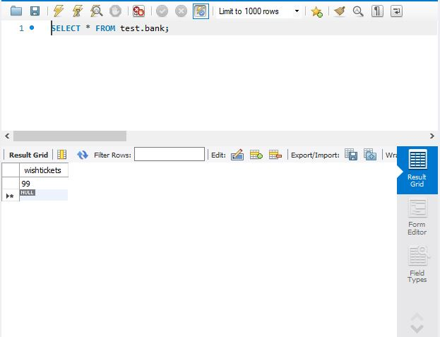

H.I.M.E (The working namefor the project) is a Discord Bot mainly coded by myself with some collaboration from a collaborator on base aspects. It utilizes JDBC in order to connect the bot with a MySQL Database, as well as uses the Google Sheets API to read Spreadsheets. It can utilize these APIs to perform an ever expanding array of functions.
H.I.M.E can register the names and Discord Ids of users into the database, as well as their favorite food as an additional playful function. The registration of Ids ensures that no matter what name a user changes to, H.I.M.E will always be able to recognize them. Lastly, it also stores "Wish Tickets", which are a currency used on the server H.I.M.E is based on.
On the server, Wish Tickets are used so that users can request certain changes or events to be implemented. However, keeping track of this manually is time consuming, labor intensive, and exhausting. H.I.M.E solves this by tracking managing the number of Wish Tickets users have at a given time. Wish Tickets can also be given to users, or traded between users, all kept track of by H.I.M.E and the Database. In order to limit the number of Wish Tickets in circulation, there also is a "Bank" table in the Database.
H.I.M.E is uses many different credentials to access various APIs. However, H.I.M.E is secure. It references all credentials for MySQL, Google Client Secrets, and Disord Bot Tokens from JSON files that are not shared with anyone besides people involved in the project. This is because I understand that as the scope of H.I.M.E increases, safety and prevention of possible leaks is paramount.